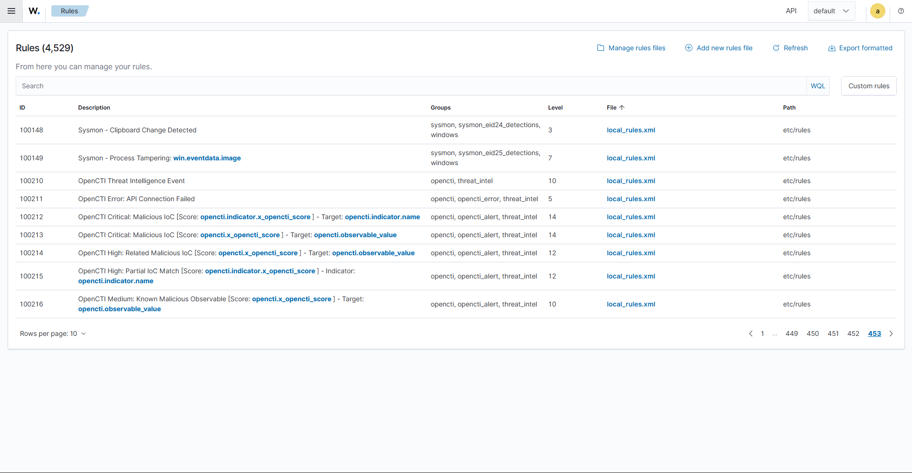

Detection Rules¶
Two sets of rules are needed:
- Base Sysmon rules that create the
sysmon_eidXX_detectionsgroups the integration listens for (only needed if you use Sysmon). - OpenCTI threat‑intel rules that turn the script's output into alerts with the right severity.
All rules go in /var/ossec/etc/rules/local_rules.xml (or via Server
management → Rules → local_rules.xml in the dashboard).

Rule IDs
The IDs below (100140–100149, 100210–100216) are examples. Change them
if they collide with rules already in your environment.
Part 1 — Base Sysmon rules¶
These wrap the built‑in Sysmon decoders and assign each event to a
sysmon_eidXX_detections group, which is what the integration's <group> list
references. Without them, modern Wazuh does not emit those groups for events
16–25.
<!-- Event 1 - Process Create (SHA256 + URLs in CommandLine) -->
<group name="sysmon,sysmon_eid1_detections,windows,">
<rule id="100140" level="3">
<if_sid>61603</if_sid>
<description>Sysmon - Process Created: $(win.eventdata.image)</description>
</rule>
</group>
<!-- Event 1 - URL detected in CommandLine -> activates audit_command path -->
<group name="sysmon,sysmon_eid1_detections,audit_command,windows,">
<rule id="100144" level="5">
<if_sid>61603</if_sid>
<field name="win.eventdata.commandLine" type="pcre2">https?://</field>
<description>Sysmon - URL Detected In CommandLine: $(win.eventdata.commandLine)</description>
<mitre><id>T1105</id></mitre>
</rule>
</group>
<!-- Event 3 - Network Connection -->
<group name="sysmon,sysmon_eid3_detections,windows,">
<rule id="100141" level="3">
<if_sid>61605</if_sid>
<description>Sysmon - Network Connection To: $(win.eventdata.destinationIp)</description>
</rule>
</group>
<!-- Event 6 - Driver Load -->
<group name="sysmon,sysmon_eid6_detections,windows,">
<rule id="100145" level="5">
<if_sid>61606</if_sid>
<description>Sysmon - Driver Loaded: $(win.eventdata.imageLoaded)</description>
</rule>
</group>
<!-- Event 7 - Image / DLL Load -->
<group name="sysmon,sysmon_eid7_detections,windows,">
<rule id="100142" level="3">
<if_sid>61609</if_sid>
<description>Sysmon - DLL Loaded: $(win.eventdata.imageLoaded)</description>
</rule>
</group>
<!-- Event 15 - FileCreateStreamHash (downloaded files) -->
<group name="sysmon,sysmon_eid15_detections,windows,">
<rule id="100146" level="5">
<if_sid>61626</if_sid>
<description>Sysmon - File Downloaded (ADS): $(win.eventdata.targetFilename)</description>
<mitre><id>T1105</id></mitre>
</rule>
</group>
<!-- Event 22 - DNS Query -->
<group name="sysmon,sysmon_eid22_detections,windows,">
<rule id="100143" level="3">
<if_sid>61650</if_sid>
<description>Sysmon - DNS Query: $(win.eventdata.queryName)</description>
</rule>
</group>
<!-- Event 23 - File Delete -->
<group name="sysmon,sysmon_eid23_detections,windows,">
<rule id="100147" level="5">
<if_sid>61651</if_sid>
<description>Sysmon - File Deleted: $(win.eventdata.targetFilename)</description>
</rule>
</group>
<!-- Event 24 - Clipboard Change -->
<group name="sysmon,sysmon_eid24_detections,windows,">
<rule id="100148" level="3">
<if_sid>61652</if_sid>
<description>Sysmon - Clipboard Change Detected</description>
</rule>
</group>
<!-- Event 25 - Process Tampering -->
<group name="sysmon,sysmon_eid25_detections,windows,">
<rule id="100149" level="7">
<if_sid>61653</if_sid>
<description>Sysmon - Process Tampering: $(win.eventdata.image)</description>
<mitre><id>T1055</id></mitre>
</rule>
</group>
Verify decoder IDs
The <if_sid> values (61603, 61605, 61606, 61609, 61626, 61650,
61651, 61652, 61653) are the stock Sysmon rule IDs in current Wazuh
rulesets. If your ruleset differs, check Ruleset Test in the dashboard and
adjust.
Part 2 — OpenCTI threat‑intel rules¶
These fire on the events the script emits. Each event_type maps to a severity
that reflects how confident the match is. This fork defines six rules,
including the new observable_only.
<group name="threat_intel,">
<!-- Parent rule: any event coming from the integration -->
<rule id="100210" level="10">
<field name="integration">opencti</field>
<description>OpenCTI Threat Intelligence Event</description>
<group>opencti,</group>
</rule>
<!-- API failure -->
<rule id="100211" level="5">
<if_sid>100210</if_sid>
<field name="opencti.error">\.+</field>
<description>OpenCTI Error: API Connection Failed</description>
<options>no_full_log</options>
<group>opencti,opencti_error,</group>
</rule>
<!-- Exact STIX pattern match -->
<rule id="100212" level="14">
<if_sid>100210</if_sid>
<field name="opencti.event_type">indicator_pattern_match</field>
<description>OpenCTI Critical: Malicious IoC [Score: $(opencti.indicator.x_opencti_score)] - Target: $(opencti.indicator.name)</description>
<options>no_full_log</options>
<group>opencti,opencti_alert,</group>
</rule>
<!-- Observable that has its own indicator -->
<rule id="100213" level="14">
<if_sid>100210</if_sid>
<field name="opencti.event_type">observable_with_indicator</field>
<description>OpenCTI Critical: Malicious IoC [Score: $(opencti.x_opencti_score)] - Target: $(opencti.observable_value)</description>
<options>no_full_log</options>
<group>opencti,opencti_alert,</group>
</rule>
<!-- Observable whose related object has an indicator -->
<rule id="100214" level="12">
<if_sid>100210</if_sid>
<field name="opencti.event_type">observable_with_related_indicator</field>
<description>OpenCTI High: Related Malicious IoC [Score: $(opencti.x_opencti_score)] - Target: $(opencti.observable_value)</description>
<options>no_full_log</options>
<group>opencti,opencti_alert,</group>
</rule>
<!-- Partial STIX pattern match -->
<rule id="100215" level="12">
<if_sid>100210</if_sid>
<field name="opencti.event_type">indicator_partial_pattern_match</field>
<description>OpenCTI High: Partial IoC Match [Score: $(opencti.indicator.x_opencti_score)] - Indicator: $(opencti.indicator.name)</description>
<options>no_full_log</options>
<group>opencti,opencti_alert,</group>
</rule>
<!-- NEW: known observable with no STIX indicator -->
<rule id="100216" level="10">
<if_sid>100210</if_sid>
<field name="opencti.event_type">observable_only</field>
<description>OpenCTI Medium: Known Malicious Observable [Score: $(opencti.x_opencti_score)] - Target: $(opencti.observable_value)</description>
<options>no_full_log</options>
<group>opencti,opencti_alert,</group>
</rule>
</group>
Severity model¶
| Rule | event_type |
Level | Meaning |
|---|---|---|---|
| 100212 | indicator_pattern_match |
14 | Exact match to a STIX indicator — highest confidence |
| 100213 | observable_with_indicator |
14 | Known observable with its own indicator |
| 100214 | observable_with_related_indicator |
12 | Match via a related observable |
| 100215 | indicator_partial_pattern_match |
12 | Partial pattern match |
| 100216 | observable_only |
10 | Known observable, no indicator (e.g. raw feeds) |
| 100211 | error |
5 | Could not reach / parse the API |
Tuning noise
observable_with_related_indicator and observable_only can be chatty
depending on how your CTI database is populated. Lower their levels if they
generate too many alerts.
After editing, restart the Manager: